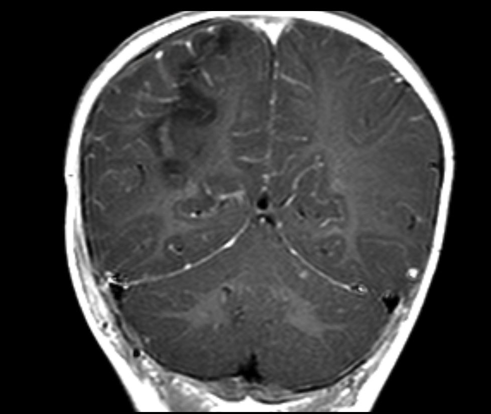
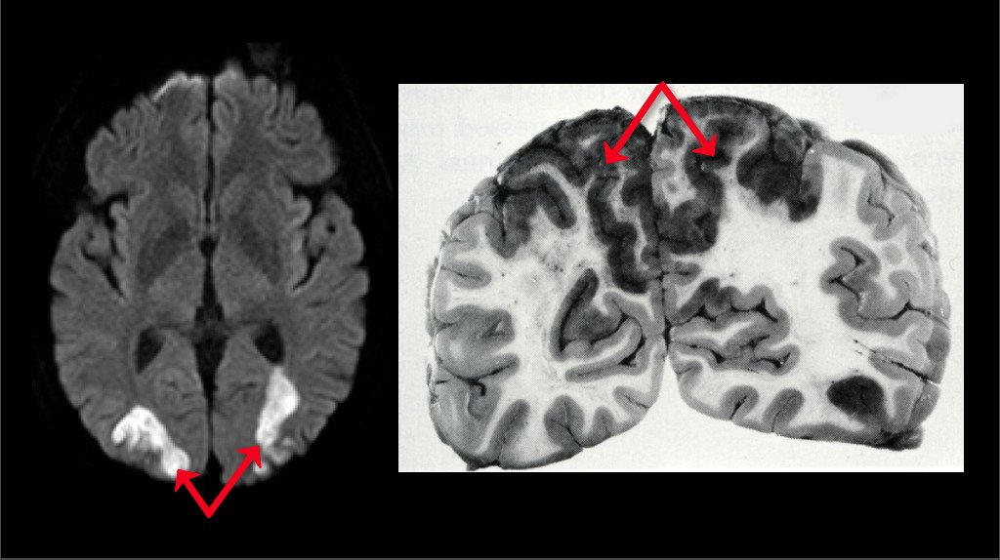
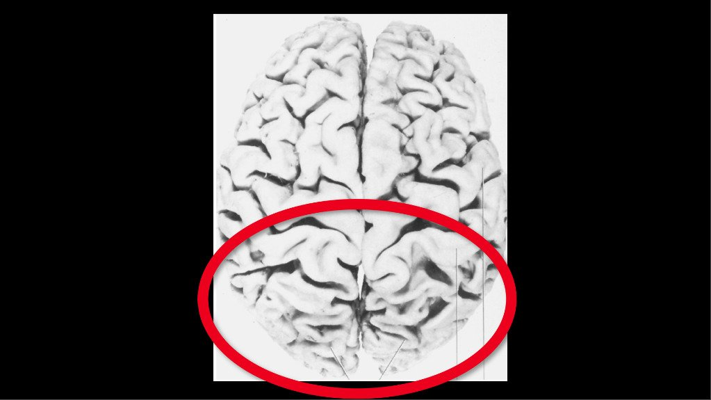

Occipital-Parietal Segment

- Carries visual signals from primary visual cortex to parietal vision-associated cortex for integration with auditory, somatosensory, and limbic inputs
- Integrates attentional and visual-spatial function
-
Unilateral lesions
-
Hemispatial neglect:
- Not Animated Video lack of awareness of visual, auditory, and somatosensory stimuli in contralateral hemispace Untitled Neglect
- Reduced motor activity in contralateral hemispace
- Loss of awareness of own contralateral body parts
- Not Animated Video Gaze deviation or gaze preference toward side of lesion Horizontal Gaze Deviation
- Common with right cerebral hemisphere lesions
- Common acute cause: ischemic or hemorrhagic parietal lobe stroke
-
Hemispatial neglect:
-
Bilateral lesions
-
Not Animated Video
Balint-Holmes syndrome (global visual inattention)
Balint
- Misreaching
- Misjudgment of spatial relationships
- Tentative walking
- Not Animated Inability to interpret pictures, tell time from analog display Telling Time
- Impaired volitional gaze
- Common acute cause: systemic hypotension with “borderzone” (“watershed”) parietal and frontal lobe infarction
- Common chronic cause: alzheimer disease
-
Not Animated Video
Balint-Holmes syndrome (global visual inattention)
Balint


